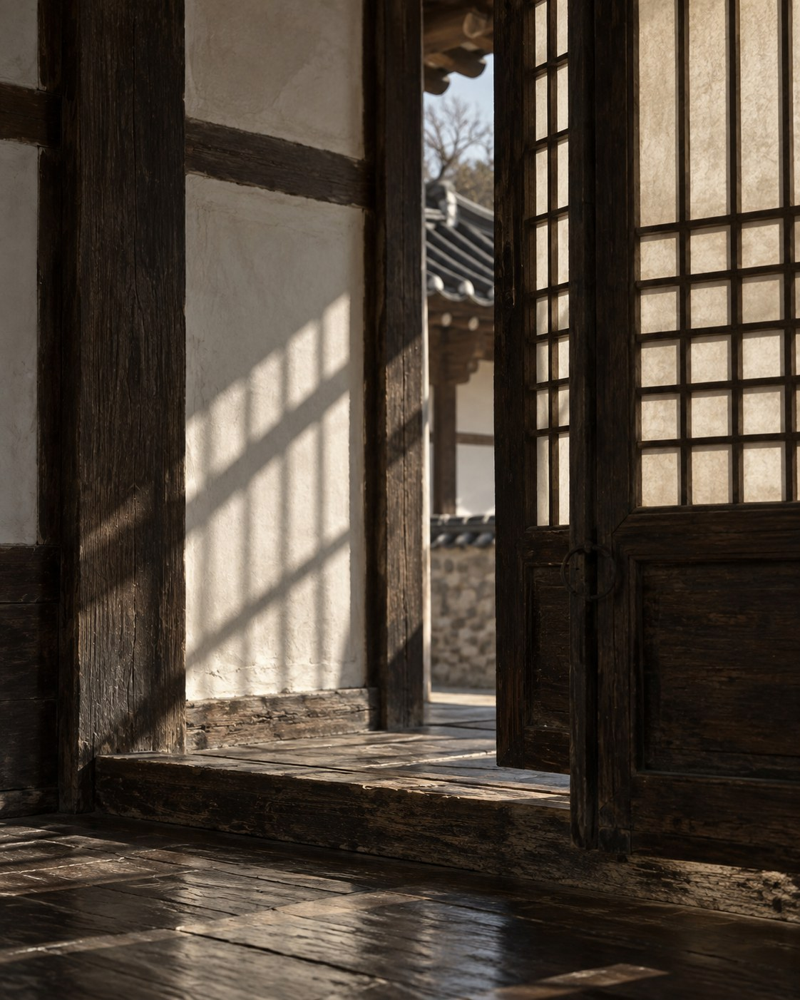
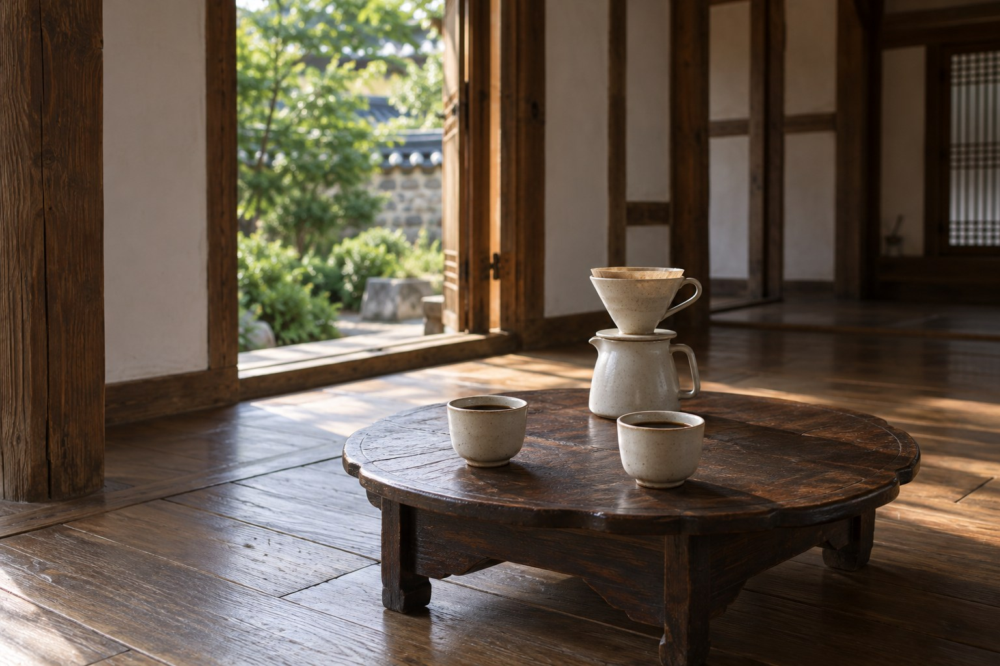

화담
봄살구와 복숭아의 화사한 과실향 위로 라벤더와 로즈힙이 부드럽게 머뭅니다.
살구 · 복숭아 · 라벤더 · 로즈힙
마주온 이야기
싱가포르에서 가족에게 줄 선물을 고르다
바샤커피에 들렀습니다.
한국에 돌아와 커피를 마실 때도 그곳이 떠올랐습니다. 벽을 채운 주황색 상자, 매장의 빛, 커피마다 붙은 이름까지. 맛과 향을 넘어 한 브랜드의 분위기가 기억에 남았습니다.
우리의 문화로도 그런 커피를 만들 수 있을까.
마주온은 그 질문에서 시작했습니다.

가장 잘 아는 곳에서 시작하고 싶었습니다. 고향인 안동에는 전통이 일상 가까이에 남아 있었습니다. 그곳의 옛 이름 ‘복주’를 빌려, 처음에는 복주커피라고 불렀습니다.
커피에 담고 싶은 것은 오래된 멋과 정서였습니다. 옛사람들이 차와 술을 곁에 두고 풍류를 즐겼듯, 지금의 우리도 커피 한 잔을 놓고 그런 시간을 보낼 수 있으면 했습니다.

복주커피에서 마주온으로
2025년 경기청년 갭이어에 참여하며 브랜드를 구체화했습니다. 그 과정에서 이름도 다시 생각했습니다. 만드는 사람의 고향을 넘어, 마시는 사람에게도 가까운 이름을 찾고 싶었습니다.
과거와 현재가 마주하고,
사람과 사람이 마주하는 커피.
그 모습을 담아
마주온이라는 이름을 붙였습니다.
맛을 고민할 때는 홋카이도의 작은 카페에서 마셨던 파푸아뉴기니 커피가 떠올랐습니다. 향이 좋으면서도 맛이 지나치게 강하지 않아, 한국의 계절과 정서를 표현해볼 수 있겠다고 생각했습니다.
그 맛을 더 알고 싶어 직접 원두를 볶기 시작했습니다. 지인들에게 커피를 내어주고, 카페를 빌려 시음회도 열었습니다. 의견을 듣고 배합을 바꾸는 일을 거듭했습니다.
우리가 떠올린 느낌이 마시는 사람에게도 전해지는지. 지금도 블렌딩을 할 때면 가장 먼저 생각하는 일입니다.
봄의 화담, 여름의 청류, 가을의 풍연, 겨울의 설한.
계절마다 다른 표정을 네 가지 블렌딩으로 전합니다.
살구와 복숭아의 화사한 과실향 위로 라벤더와 로즈힙이 부드럽게 머뭅니다.
살구 · 복숭아 · 라벤더 · 로즈힙

라임과 청사과의 맑은 산미, 허브와 그린티의 투명한 여운이 깨끗하게 이어집니다.
라임 · 청사과 · 허브 · 그린티

로스티 곡물과 흑설탕의 담백한 고소함 뒤로 은은한 스파이스가 깊이를 더합니다.
로스티 곡물 · 흑설탕 · 스파이스

차분한 허브와 스파이스, 무겁지 않은 바디가 겨울처럼 잔잔하고 길게 이어집니다.
허브 · 스파이스 · 맑은 바디 · 긴 여운
옛 선조들이 차와 술을 곁에 두고 풍류를 즐겼듯,
마주온은 오늘 그 자리에 커피를 놓습니다.